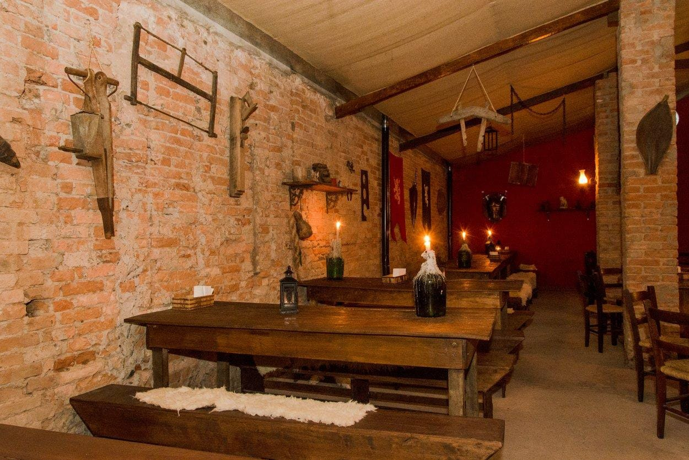

Noite Medieval
Uma noite especial com decoração temática, música medieval e pratos especiais.
Data: 20 de setembro
Hamburgueria temática medieval

Bem-vindo à Taverna Medieval! Aqui você encontra deliciosos hambúrgueres em um ambiente inspirado nas antigas tavernas e castelos medievais.
Reúna seus amigos, escolha seu prato favorito e aproveite uma experiência diferente, com muita comida e diversão.
| Informação | Detalhes |
|---|---|
| Tipo | Hamburgueria temática |
| Funcionamento | Terça a Domingo |
| Horário | 18:00 às 23:30 |
| Ambiente | Medieval e descontraído |
| Pagamento | Dinheiro, Pix e cartões |
Nossa taverna oferece algumas comodidades para deixar sua visita ainda mais confortável:
Uma noite especial com decoração temática, música medieval e pratos especiais.
Data: 20 de setembro
Participe de brincadeiras e desafios inspirados nos antigos torneios medievais.
Data: 27 de setembro
Uma noite especial dedicada aos amantes de hambúrguer. Venha experimentar combinações diferentes.
Data: 04 de outubro
Telefone: (11) 4114-2816
Reservas: tavernamedieval.com.br
Endereço: R. Gandavo, 456 - Vila Clementino, São Paulo - SP, 04023-001
Quer acompanhar nossas novidades?
Visite nosso Instagram